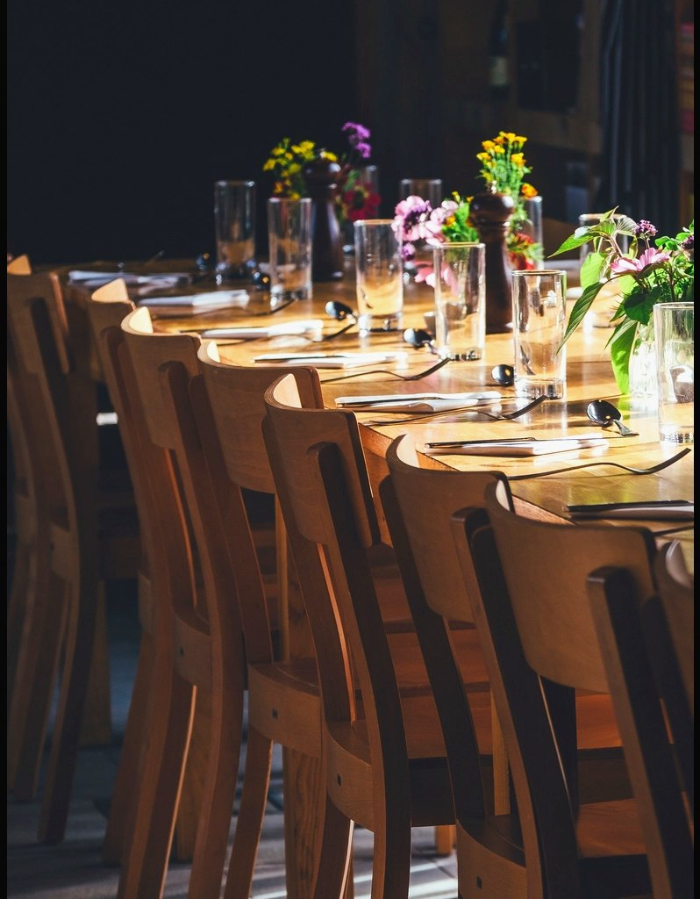

Next Issue / 002 preview
Exodus 16
Arrives next month
Keep this paper close
Issue 002 · a meal where there should not be one
Table in the
Wilderness
- Reading
- Exodus 16, in full
- Question
- What is enough for today?
- Table
- Set in the place nobody planned